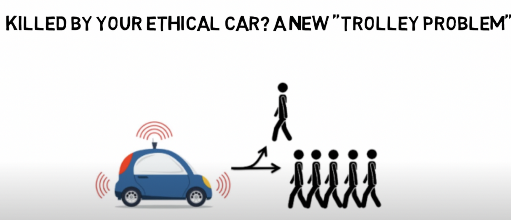
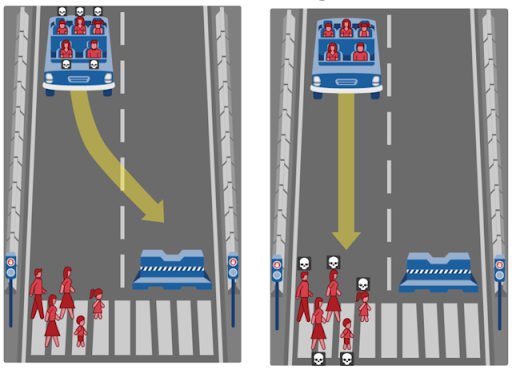
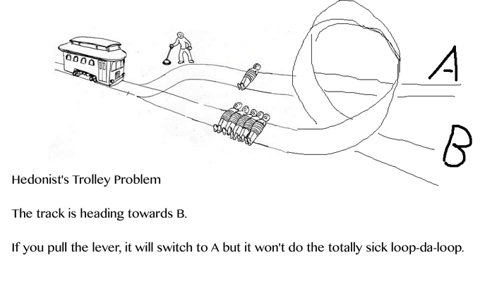

Utilitarianism, Brian Duignan, 2021
Image Presented: Jeremy Bentham
Utilitarianism is associated with wrongdoings and mostly immoral acts. However, it takes a stronger look at the overall outcomes of these acts, and not just the wrong of them. If an act’s consequences provide good consequences that outweigh the original action, then the action is considered to be moral/ethical to do. Furthermore, an act may still be considered ethical even if the motive of the act is bad and the action/outcome is beneficial.
Author Brian Duigan, in “Utilitarianism”, defines the philosophical term through concepts and its history. Through his work mentions that the ideology’s origins are notably remembered to originate with two hedonists, Jeremy Bentham and John Stuart Mill. The two believed that each action, if moral, is balanced or outdone by the positive consequences of the decision. They believed that our actions are solely based on pleasure and pain, and thus we should act for the sake of overall happiness. As a result, the idea of utilitarianism, and the popular scenarios similar to the trolley problem, or even contemplating the current world, emerged.
Calculating Consequences: The Utilitarian Approach to Ethics, Santa Clara University, 2014
Santa Clara University demonstrates the idea of utilitarianism through a lens in which each action is evaluated to see if it benefits everyone around them. Santa Clara Univeristy presents an example of lying as a bad act, then proceeds to say that if by lying we create a better outcome, then we should lie because the benefits outweigh the costs. "What effect would everyone's doing this kind of action have on the general balance of good over evil," asks the author.
Lying would then be considered unethical because every time we lie or tell the truth, the outcome of telling the truth will (in every unique situation) outweigh the outcome of lying. In both cases, lying or telling the truth may be considered a utilitarian act of sort because you are creating harm with either, but the one that has the greatest (best) outcome should be the decision taken.

A Modern Trolley Problem: Smart Cars and Ethical Programming
Decision Skills, Richard Feenstra, 2017
When presented with the traditional trolley problem, about 90% of people decide to pull the lever to save 5 people and kill one. If the problem remains the same but now to save the group you need to push a person off of a bridge, the percent who saves the group drops to a mere 10%. While both convey a utilitarian message, it seems that pushing someone off of a bridge to save others is more ethically wrong than simply pulling a lever and killing that same person.
Richard Feenstra challenges this basic utilitarian rationale of only acting for the better good, and proposing that some acts may be too immoral to commit. He argues that ethical situations are a “sticky subject” dependent on multiple factors other than just what gives us the best outcome. To best relate, Feenstra presents the current situation with modern electric cars and the way some of them might be programmed. If a car senses that it is driving into an oncoming group of people, should the car be programmed to crash (killing the driver) to save the group of people? How will the car’s programming differ depending on who is in it like a president or celebrity? The answer to that is all dependent on your morals and your background since there is no one or right answer.
The age-old trolley problem is an extremely memorable scenario. In this situation, one is faced with a lever that may switch the direction a trolley track points. A trolley is oncoming a group of people that the track is currently pointed at. In the other direction of the track, which the person with the lever may pull, there lays one person. The trolley can not be stopped in any way and the person with the lever is faced to either pull the lever or leave it as it is.
Author James Wilson argues that deciding on any sort of ethical scenario related to a utilitarian action has a great relation to the person’s background and expertise. As a philosopher, he argues that certain groups of people like clinicians cannot decide because they begin to question the scenario from a medical perspective. As a result, the author questions ethical scenarios and indirectly questions utilitarianism, based on the fact of how can you evaluate which action has a better outcome if there is no one way to interpret a situation. Wilson also validates his questioning by saying that certain decisions are based on numerous factors from gender, to culture, to even profession, and thus there is no one way to interpret the situation and come to a decision.
Arguments for Utilitarianism
Utilitarianism.net, William MacAskill, Richard Yetter Chappel, and Darius Meissner
When decision making occurs, we tend to instantly shift towards the beneficial. The utilitarian rationale would agree with the need to focus on the true happiness and the well-being of others based on the outcome of the action. However, it may also pose a question: Can we act in an immoral way that may violate commonsense to benefit others?
As professors of philosophy, they argue in favor of acting for only the better good. Through an ethical perspective, they claim that the happiness of people should be the sole concern of a person making a decision. The sole goal of life is, in essence, left to the true, moral question: “What is right?” The authors challenge the historical belief that stealing is immoral, claiming that if the wealth is redistributed to the population, it creates a more beneficial outcome from this horrible act because, in theory, you are creating a societal equilibrium. As a result, the chapter advocates for the elimination of all moral rules, and sole focus on overall benefit.

Modeling of moral decisions with deep learning
Visual Computing for Industry, Biomedicine, and Art, Christopher Wiedeman, Ge Wang & Uwe Kruger, 2020
Upon first glance, this image presents nothing more than a scenario we see every day, cars driving on the road and pedestrians crossing. But let’s say this car was now unable to stop, and in the car are 5 people, and on the sidewalk are 5 people. Does the car prioritize the people inside it or the ones outside?
Through the use of this image, the authors present a dilemma and analyze a significantly more modern version of the trolley problem, now with the ethical question of AI. They argue that, while the car should prioritize the occupants, the more ethical would be to prioritize the passengers. Since the crashing of the car is ultimately the fault of the drivers, innocent civilians should not be the ones suffering.

This source presents a humurous take on the tough problem. Through the humorous appeal, the problem still present a very real ethical dillema, but inserts humor in order to appeal to the audience.
This problem, however, can also be traced back to the original introduction of the trolley problem. Since the origin of the trolley problem can be traced back to hedonists, this source, while humorous, also demonstrates that a hedonistic lifestyle doesn’t necessarily equate to the solving of all problems. It directly points in context the way hedonists think and the true value placed, hence questioning the entire basis behind the problem itself.
{kind=link}
{kind=link}
{kind=link}
{kind=link}
{kind=link}